Was ist Löten?
Beim Löten verbindest du zwei Metallteile mit einem geschmolzenen Metall, dem Lot. Das Lot schmilzt immer bei einer niedrigeren Temperatur als die Teile, die du verbindest. Die Teile selbst bleiben fest.
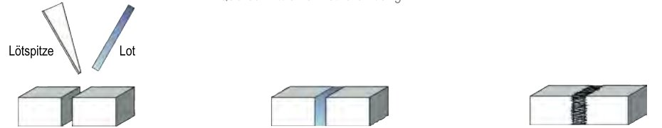
Teile und Lot werden erwärmt.
Das flüssige Lot fließt in den Spalt und füllt ihn.
Das Lot erstarrt und hält die Teile zusammen.
Was im Metall passiert
Das Lot klebt nicht einfach auf dem Metall. Das Zinn löst die Oberfläche ein wenig an. So entsteht eine Mischkristallschicht. Erst sie macht die Verbindung dauerhaft. Tippe auf eine Schicht.
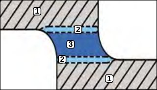
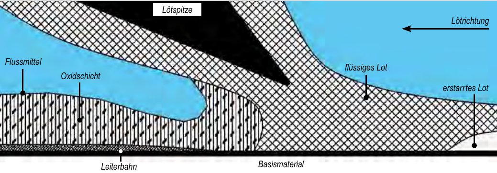
Ideal ist eine Mischkristallschicht von etwa 0,5 µm. Ist sie zu dick, wird die Lötstelle brüchig. Ist sie zu dünn, hält sie nicht.
Fünf Faktoren für gutes Löten
Ob eine Lötstelle gelingt, hängt von fünf Dingen ab. Schau dir jeden Faktor an.
Welches Lot schmilzt wann?
Seit dem 1. Juli 2006 ist Blei in den meisten Elektrogeräten verboten (RoHS). Bleifreies Lot besteht aus Zinn mit etwas Silber oder Kupfer und schmilzt heißer. Wähle ein Lot und vergleiche es mit der üblichen Spitzentemperatur in der Feinelektronik.
Schwarzer Rahmen: übliche Spitzentemperatur in der Feinelektronik, 250 bis 375 °C. Insgesamt braucht man je nach Lötstelle und Lot 200 bis 450 °C.
| Legierung | Art | Schmelzpunkt |
|---|
So lötest du eine Verbindung
Jede Lötung hat drei Phasen: Benetzen, Fließen, Binden. Die beste Temperatur ist die niedrigste, bei der alle drei Phasen gut ablaufen.
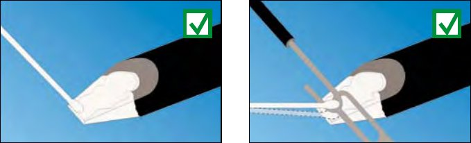
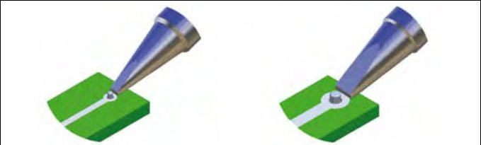
Bring die Schritte in die richtige Reihenfolge
Wie lange darf eine Lötung dauern?
Mit der richtigen Spitze ist eine Lötung nach 2 bis höchstens 5 Sekunden fertig. Bleifreies Lot braucht etwas länger. Dauert es länger als 5 Sekunden, ist der Kolben zu kalt oder zu schwach.
Je heißer und je länger du lötest, desto dicker wird die Mischkristallschicht, und die Lötstelle wird spröde.
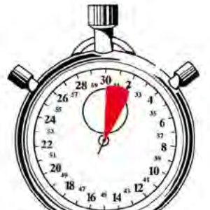
Stoppe die Uhr zwischen 2 und 5 Sekunden
Starte, zähle im Kopf mit und stoppe, wenn du glaubst, die Lötung wäre fertig. Die Anzeige läuft verdeckt.
Gute Lötstelle oder schlechte?
Glatt und glänzend
Ohne Poren. Bleifreies Lot mit Silber darf auch matt aussehen.
Draht erkennbar
Die Form des Anschlussdrahts ist noch zu sehen. Also nicht zu viel Lot.
Flacher Winkel
Bis 25° ist gut. Bis 50° ist beim Handlöten noch in Ordnung.
Ist diese Lötstelle in Ordnung?
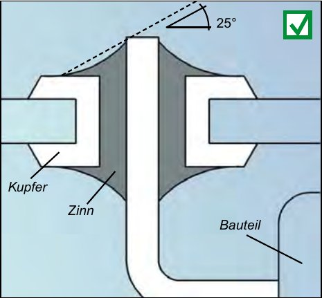
Nach der letzten Lötstelle legst du den Kolben in die Ablage, ohne die Spitze vorher zu reinigen. Das Restlot schützt die Spitze vor Oxid.
Entlöten: Fehler reparieren
Ist eine Lötstelle misslungen, entfernst du das alte Lot und lötest neu. Dafür gibt es drei Werkzeuge.
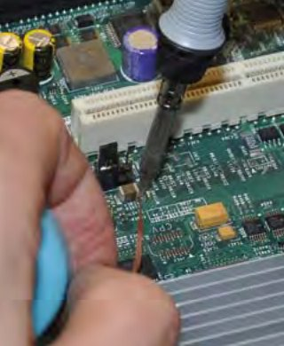
Entlötlitze
Ein Kupfergeflecht saugt das flüssige Lot auf wie ein Docht.
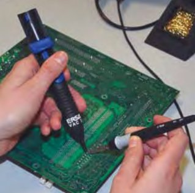
Entlötpumpe
Lötstelle erwärmen, Spitze weg, Pumpe aufsetzen und Lot absaugen.
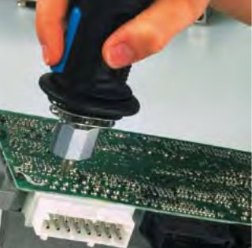
Entlötkolben
Die hohle, beheizte Spitze schmilzt das Lot und saugt es gleich ab.
Tipp: Die Öffnung der Entlötspitze sollte so groß sein wie die Bohrung in der Platine, höchstens etwa 0,3 mm größer.
SMD: immer kleiner, immer feiner
SMD steht für Surface Mount Device. Die Bauteile werden direkt auf die Oberfläche der Platine gelötet, ganz ohne Bohrungen. Das ist heute der Standard in der Elektronik.
Für einzelne winzige Lötstellen gibt es Spitzen mit nur 0,2 mm Durchmesser. Chips mit vielen eng stehenden Beinchen (Fine-Pitch) lötet man mit einer Spitze mit Hohlkehle, die man über alle Beinchen zieht.
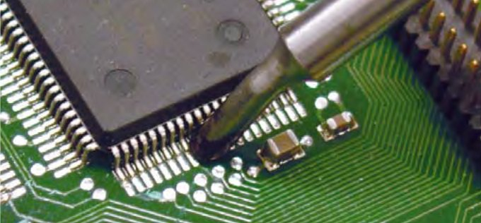
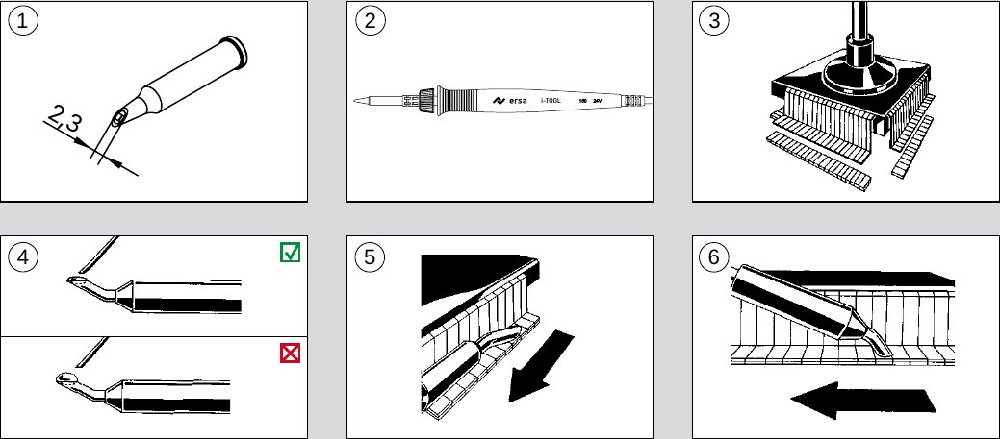
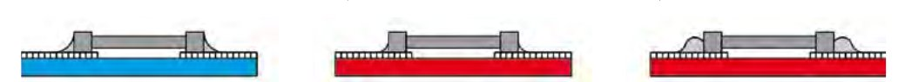
Teste dein Wissen
Sechs Regeln für jede Lötstelle
- Sauberkeit zuerst: Teile und Spitze ohne Schmutz und Oxid.
- Erst die Lötstelle erwärmen, dann Lot zuführen.
- So heiß wie nötig, so kurz wie möglich: 2 bis 5 Sekunden.
- Erst den Lötdraht wegnehmen, dann die Spitze. Nicht wackeln.
- Gute Lötstelle: glatt, flach auslaufend, Draht erkennbar.
- Rauch absaugen, nichts essen, danach Hände waschen.